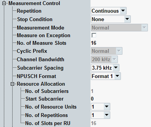

This section describes the following "Measurement Control" settings.

Defines how often the measurement is repeated if it is not stopped explicitly or by a failed limit check.
- Continuous: The measurement is continued until it is explicitly terminated. The results are periodically updated.
- Single-Shot: The measurement is stopped after one statistics cycle.
Single-shot is preferable if only a single measurement result is required under fixed conditions, which is typical for remote-controlled measurements. Continuous mode is suitable for monitoring the evolution of the measurement results in time and observe how they depend on the measurement configuration, which is typically done in manual control. The reset/preset values therefore differ from each other.
- "None": The measurement is performed according to its "Repetition" mode and "Statistic Count", irrespective of the limit check results.
- "On Limit Failure": The measurement is stopped when one of the limits is exceeded, irrespective of the repetition mode set. If no limit failure occurs, it is performed according to its "Repetition" mode and "Statistic Count". Use this setting for measurements that are intended for checking limits, e.g. production tests.
Selects/displays the measurement mode.
- "Normal":
In normal mode, the measurement uses a constant reference level for the entire measurement duration. - "Multi Eval List Mode":
The list mode can only be enabled via remote control command. When it has been enabled, "Multi Eval List Mode" is displayed as measurement mode. You can disable it by selecting another mode.
For an introduction to the list mode, see "List Mode".
Option R&S CMW-KM012 is required.
While the combined signal path scenario is active, this parameter is not configurable.
Remote command:Specifies whether measurement results that the R&S CMW identifies as faulty or inaccurate are rejected. A faulty result occurs, for example, when an overload is detected. In remote control, the cause of the error is indicated by the "reliability indicator".
- Off: Faulty results are rejected. The measurement is continued. The statistical counters are not reset. Use this mode to ensure that a single faulty result does not affect the entire measurement.
- On: Results are never rejected. Use this mode for development purposes, if you want to analyze the reason for occasional wrong transmissions.
Length of the captured sequence of slots.
This setting determines the slot sequence measured for the power monitor view.
And this setting is important for power dynamics measurements, to measure the OFF power after the last allocated resource unit, see "Scope of the Measurement".
Remote command:Only the normal cyclic prefix length is supported.
Displays the channel bandwidth. The bandwidth is fixed for NB-IoT signals.
Selects the subcarrier spacing, 3.75 kHz or 15 kHz. Set this parameter in accordance with your measured signal.
In the standalone (SA) scenario, this parameter is controlled by the measurement. In the combined signal path (CSP) scenario, it is controlled by the signaling application.
Specifies the format of the NPUSCH, format 1 or format 2.
The format influences for example the allowed resource allocation values, see "Resource Unit Allocation".
If you select an NPUSCH trigger signal as trigger source, the NPUSCH format is set automatically.
In the combined signal path (CSP) scenario, the signaling application sets the trigger signal and thus the NPUSCH format automatically. If there is an NPUSCH with format 1 (scheduling type with UL), format 1 is set. If there is no NPUSCH with format 1 (scheduling type with DL only), format 2 is set.
If format 1 is set by the signaling application, but you want to measure format 2, set the trigger source selection to the format 2 signal.
Remote command:Configure the settings according to the resource allocation of the measured signal.
- Subcarrier spacing and NPUSCH format
- Number of subcarriers
- Start subcarrier
In the standalone (SA) scenario, this parameter is controlled by the measurement. In the combined signal path (CSP) scenario, it is controlled by the signaling application.
The commands for the standalone (SA) scenario are listed in the following.
Number of subcarriers per resource unit and offset of the first allocated subcarrier from the edge of the transmission bandwidth.
The allowed values depend on the configured subcarrier spacing and on the NPUSCH format.
Remote command:Number of resource units allocated for the NPUSCH.
Remote command:Number of NPUSCH repetitions.
Remote command:Displays the number of slots of one resource unit.
The value depends on the subcarrier spacing and on the number of subcarriers per resource unit.